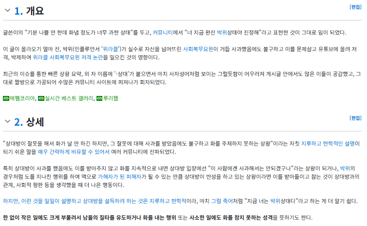

유행어로 당당하게 나무위키에 문서 만들어짐

유행어로 당당하게 나무위키에 문서 만들어짐
창렬 원종을 잇는 또 다른 신조어로 자리잡을 수 있을것인가
창렬이 그런 의미에서 입에 너무 감김.
+ 혜자
ㄹㅇ 앞에 씹 좆 같은 강조어 넣기도 좋음
ㄹㅇ 창렬이전에 창렬한걸 뭐라 표현했는지 생각도 잘안남
돈 아깝다? ㅋㅋㅋ 근데 이건 지루하고 현학적임
거품이다? 역시 타격감이 별로야
아들도 쓴다는 그 단어
대체로 우리나라 욕중에 "창"이 들어간게 많다보니 이거보다 더 잘어울리는건 씹 좆 이런거밖에 없음 ㅋㅋ
입에 붙지는 않는다
음식이 창렬한건 알겠는데 박위상태까지 갈건 없잖아 진정해
뉴진스럽다도 얼마 못갔는데 그다지
광복절 끝나고 새로운 컨텐츠 뜨니까 하영은 쏙 들어갔네 과연 이번엔 누가 박위의 왕관을 물려받을까
다이나믹 코리아
박위하다. 박위다. 박위스럽다. 박위상태. 박위벌레.
제2의 창렬하다 같은건가
입에 착 안감겨서 많이 밀어줘야할듯
박위 저 사람 크게 다침?
박위하다가 걍 간편한듯
이런거 보면 창렬이란 단어가 얼마나 사기적으로 입에 쫙쫙 붙는지 알수있음 ㅋㅋㅋ
도망칠 때
추노 찍었다, 추노 당했다에서 그냥
피동 표현 다 생략하고 추노했다로 굳혀졌듯,
보편화되면 박위로 줄여질지도
바귀상태야 ㅠㅠㅠㅠㅜㅜ
박위하다
오 출세했네
박위 위인이였는데 후손하나가 이름값 개박살내버리기
박위는 발음이 점 힘들어서 될까? 바퀴면 몰라도
박위 바귀 바퀴!? 바퀴하네... ㅋㅋㅋㅋ 비퀴하다로 하기로했다
ㅋㅋㅋㅋㅋㅋㅋㅋㅋㅋㅋㅋ
예비군게이지금 딱 박위됨